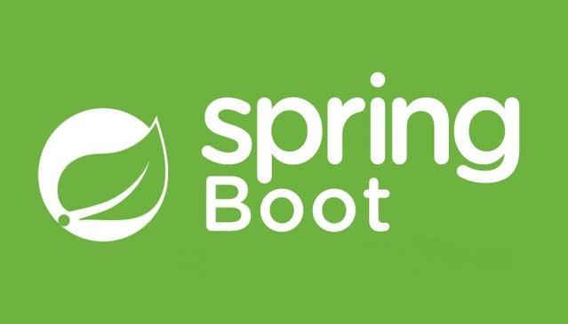
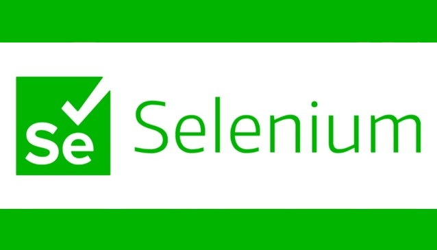

Core technologies
Programming
Java, SpringBoot, JavaScript, JQuery, Node.js, ReactJS, SQL,
Selenium, R, Git, Tableau, HTML+CSS
Development tools and other Applications
IntelliJIdea, R Studio, MySQL, Webstorm, Jira, Confluence,
BitBucket, GitHub, Miro, Ginis, SAP
Other skills
Agile development, English, Czech, Japanese, SQL Database design
Briefly about me
My journey in IT really started in 2016 when I began working as IT tester for Apple products
(iPhones, iPads) while I was still a university student. Aside from that, I worked as a Data
analyst at The Confederation of industry of the Czech Republic. The work was put at halt
when I went to Japanese university thanks to an exchange programme.
* * *
I got a master's degree at my university after I returned from the successful stay in Japan. I
started working as a ministerial councillor at the Ministry of interior of the Czech Republic as
soon as I got my diploma. I worked on specifications of large scale security IT systems
(ETIAS, EES, RECAMAS) among other things.
* * *
I started working as pure Java developer in 2021. Aside from Java (Spring), I worked with
various technologies in BackEnd, FrontEnd, as well as databases.
My portfolio:

University team project for an exam. We (the team of three) had 8 hours to design complete Java
Spring application for reserving rooms in two separate buildings by a user.
The building were 30 minutes away from each other. Some users may be banned from booking certain
rooms. Also, rooms have given capacity and equipment present (user may need a certain specifications).
Various libraries were used and Gradle was picked for application building.
A school university team project. The goal was to develop React JS web cook-book application.
User/admin is able to create/delete/update recipes as well as their categories. The application
uses several forms and other features to facilitate user experience.
User can also set how many meals they want to cook and the application will automatically
re-calculate ingredients required. Both front-end and back-end included.
A project I was working on when I was learning Java at the university.
Purely in command line this time. A standard to-do list with full task management,
user management and authentication. Everything in core Java without using any frameworks.
More advanced Java Springboot application focusing on complete CRUD backbone.
It simulates application handling creating, deleting and managing courses for
university students. Very detailed in-code documentation included. It is a personal project.
Personal project using Java Springboot.
It is focusing on core functionalities and the architecture of the framework.
The personal article is in Czech. It covers the topic of designing the most cost-efficient SQL
databases.
The goal was to present various premises essential for the correct assessment of the task as well as
the four stages of data modelling used to facilitate the design process.
The article was based on academic sources as well as my work experience.
A personal project to design a calculator app using Java(GUI included). The IDE I have used is IntelliJ IDEA.
The reason for the project's existence was to make my hands dirty with code after gaining
theoretical knowledge of Java.
My second personal Java project. With full GUI support, it is designed to deal with one of the most classical
concepts in math - the quadratic equation.
The reason for the project's existence was to develop my skills in Java. The additional concepts are
exceptions, more GUI features as well as more advanced math features.

This is a simple personal test case for web page "jisho.org". Selenium's automated functionalities
through web drivers were used.